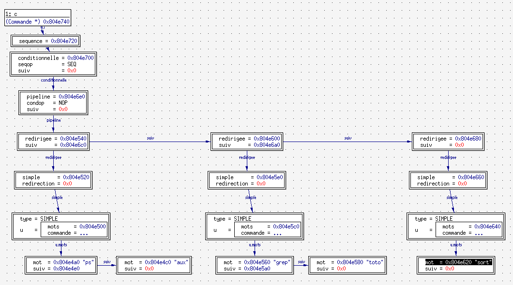

Le premier problème est de représenter en mémoire les commandes acceptées par notre shell. Nous avons vu (dans la partie Syntaxe) que ces commandes avaient une structure bien définie. D'autre part, le but de notre mini-shell est de lire une commande, d'en comprendre la structure, de l'exécuter, puis de recommencer.
Afin de vous simplifier le travail, nous vous fournissons tout ce qui concerne la transformation d'une chaine de caractères (tapée par l'utilisateur) en une structure de données qui représente correctement les différents niveaux de commandes (séquences, pipelines, etc).
L'ensemble du code utilisable se trouve dans une bibliothèque appelée chelle.a. Vous n'avez pas besoin de comprendre tout ce code, il vous suffit de savoir comment l'utiliser. Cette page vous explique ce que vous pouvez faire.
Le fichier commande.h contient la définition de toutes les structures nécessaires pour représenter une commande quelconque de notre mini-shell.
Le plus simple est que vous lisiez le fichier commande.h, en même temps que la description de la syntaxe. Vous pouvez aussi utiliser le programme d'exemple fourni avec un debugger visuel (par exemple ddd) pour explorer les structures de données.
Voici néanmoins quelques exemples, réalisé avec un debugger visuel (ddd). Dans chaque cas, vous voyez les structures employées :
ps aux | grep toto | sort

ps && ls && date
( cat prog.h ; cat prog.c ) > brouillon.txt
(Dans ce cas, la totalité de la structure n'est montrée.)
On pourrait multiplier les exemples. Libre à vous d'examiner ces structures, soit sous forme textuelle (voir l'exemple ci-dessous) soit en utilisant un debugger comme nous l'avons fait ici.
La première difficulté consiste à lire une chaîne de caractères et à en comprendre les différents constituants, c'est-à-dire à interpréter le texte en termes de commandes simples, de pipelines, etc. La fonction :
Commande * parse_commande(char * str);
fait cela pour vous. Il suffit de lui fournir une chaîne de caractères, et elle renvoie un pointeur sur une structure Commande contenant les différents éléments de la commande. Si la syntaxe de la commande n'est pas correcte, cette fonction renvoie NULL.
Puisque la structure renvoyée par parse_commande() est allouée dynamiquement, il faut absolument libérer la mémoire utilisée après usage. La fonction :
void free_commande(Commande * c);
réalise exactement cela. Il est bien sûr obligatoire de l'appeler après avoir utilisé une structure Commande.
Pour vous aider à comprendre de quoi il s'agit, il existe également une fonction :
void dump_commande(Commande * c, FILE * f);
qui affiche sous forme de texte dans le fichier f une représentation arborescente de la structure construite. Cela vous permet de voir comment la fonction parse_commande() a compris le texte tapé par l'utilisateur.
Notre mini-shell doit gérer un historique des commandes. Il se trouve que l'accès à l'historique peut se faire de trois façons : soit pour accéder à la dernière commande, soit pour accéder à un commande par son numéro dans l'historique, soit pour accéder à une commande en donnant ses premières lettres. Il faut cependant être conscient que cet accès ce fait pendant que la fonction parse_commande() fait son travail. Pour ne pas avoir à modifier cette fonction, celle-ci est définie de façon à appeler des fonctions de gestion de l'historique. En voici la liste.
char * historique_precedente();
Cette première fonction est appelée chaque fois que le mot !! est lu. Son rôle est de renvoyer la dernière commande entrée dans l'historique, sous la forme d'une chaîne de caractères.
char * historique_numero(int);
Cette deuxième fonction est appelée chaque fois qu'un mot de la forme !entier est lu (par exemple !5). Son rôle est de renvoyer la commande de l'historique qui a le numéro donné, sous la forme d'une chaîne de caractères.
char * historique_chaine(char *);
Cette troisième et dernière fonction est appelée chaque fois qu'un mot de la forme !chaine est lu (par exemple !gcc). Son rôle est de renvoyer la dernière commande de l'historique qui commence par chaine, sous la forme d'une chaîne de caractères.
Vous devez écrire ces fonctions pour que votre programme puisse se compiler. Voyez l'exemple ci-dessous pour un exemple de définition temporaire.
Attention : la chaîne de caractères renvoyée par ces trois fonctions doit être allouée dynamiquement, et sera libérée automatiquement après utilisation.
Voici à titre d'exemple un simple programme appelé chelle.c, que vous trouverez avec le code de la bibliothèque.
#include <stdio.h>
#include "commande.h"
/* Trois définitions stupides pour gérer l'historique */
char * historique_precedente()
{
char * s = calloc(strlen("historique precedente")+1,sizeof(char));
strcpy(s,"historique precedente");
return s;
}
char * historique_numero(int i)
{
char * s = calloc(strlen("historique numero")+12,sizeof(char));
sprintf(s,"historique numero %d",i);
return s;
}
char * historique_chaine(const char * c)
{
char * s = calloc(strlen("historique chaine")+strlen(c)+2,sizeof(char));
sprintf(s,"historique chaine %s",c);
return s;
}
/* Un programme principal */
int main()
{
char buffer[256];
while ( fgets(buffer,256,stdin) != NULL )
{
Commande * c;
if ( (c=parse_commande(buffer)) != NULL )
{
dump_commande(c,stdout);
free_commande(c);
}
}
return 0;
}
Bien sûr le but du projet est de remplacer l'appel à dump_commande() par un appel d'une fonction run_commande() que vous écrirez, et de définir correctement les trois fonctions de gestion de l'historique. Vous n'avez rien d'autre à faire.